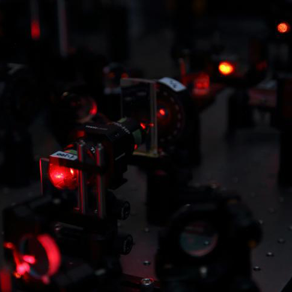

展示・演示実験
理学部1号館2階にて物理ショー班以外の7班がポスター展示や簡単な演示実験を行います。

BEC班
BEC班では、原子を-273℃（絶対零度）近くの超低温にすると生じる、“ボーズ・アインシュタイン凝縮（略称BEC）”という不思議で面白い状態をつくりだす実験を行っています。それに伴って、BECの理論的背景や、BECを利用したシミュレーションもおこなっています。五月祭当日では、実験・理論・シミュレーションの3つの側面から、BECに触れていただきたいと思っています。
もっと詳しくBEC班
BEC班では、原子を-273℃（絶対零度）近くの超低温にすると生じる、“ボーズ・アインシュタイン凝縮（略称BEC）”という不思議で面白い状態をつくりだす実験を行っています。それに伴って、BECの理論的背景や、BECを利用したシミュレーションもおこなっています。五月祭当日では、実験・理論・シミュレーションの3つの側面から、BECに触れていただきたいと思っています。
もっと詳しくBEC班
BEC班では、原子を-273℃（絶対零度）近くの超低温にすると生じる、“ボーズ・アインシュタイン凝縮（略称BEC）”という不思議で面白い状態をつくりだす実験を行っています。それに伴って、BECの理論的背景や、BECを利用したシミュレーションもおこなっています。五月祭当日では、実験・理論・シミュレーションの3つの側面から、BECに触れていただきたいと思っています。
もっと詳しく